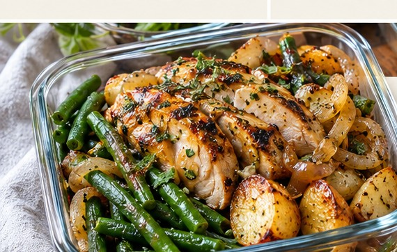

American · Lunch · Serves 2 · 50 minutes
Honey-Dijon Chicken, Roasted Potato and Green Bean Bowls

Ingredient amounts are estimates when scaled. Original recipe and AnyList import remain unchanged.
Ingredients
- 1 lb boneless skinless chicken thighs
- 1 lb baby potatoes, halved
- 10 oz green beans, trimmed
- 1/2 yellow onion, sliced
- 2 Tbsp olive oil
- 1 tsp dried thyme
- 1/2 tsp garlic powder
- 3/4 tsp kosher salt
- Black pepper
- 2 Tbsp Dijon mustard
- 1 Tbsp honey
- 2 Tbsp plain Greek yogurt
- 1 Tbsp lemon juice
- 1 Tbsp water
Instructions
- Heat oven to 425°F. Toss potatoes and onion with 1 Tbsp oil, thyme, half the salt and pepper. Roast 15 minutes.
- Season chicken with garlic powder, remaining salt and 1/2 Tbsp oil. Add to pan and roast 18–22 minutes until chicken reaches 165°F.
- Roast green beans separately with remaining oil for 10–12 minutes.
- Whisk Dijon, honey, yogurt, lemon juice and water. Keep sauce cold and separate.
- Divide chicken, potatoes, onions and green beans between two containers; cool promptly and refrigerate at 40°F or below.
- Reheat bowl until steaming hot (165°F), then add cold sauce. Use within 3–4 days or freeze a portion.